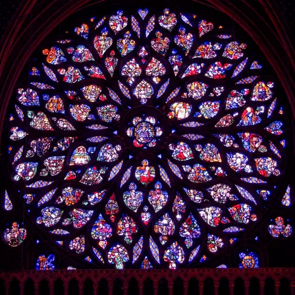

MTVM - Chương 18 (1)

Chương 18
Vào buổi trưa tất cả chúng tôi đều có mặt ở quán café. Quán chật ních người. Chúng tôi gọi món tôm và uống bia. Cả thị trấn toàn người là người. Con đường nào cũng đông đúc. Những chiếc xe ca lớn từ Biarritz và San Sebastian nối đuôi nhau tiến vào thị trấn và đỗ quanh quảng trường. Chúng chở người tới xem trận đấu. Cả những chiếc xe đi ngắm cảnh cũng có mặt. Có một chiếc chở hai mươi nhăm phụ nữ Anh. Họ ngồi trong một chiếc xe to màu trắng và nhìn fiesta bằng những chiếc ống nhòm. Các vũ công đã xỉn tới nơi. Hôm ấy là ngày cuối cùng của fiesta.
Fiesta rất bền chặt và không thể phá vỡ, nhưng xe ô tô và xe du lịch tạo thành những ốc đỏ nhỏ của những kẻ bàng quan. Khi những chiếc xe rỗng không, người xem lẫn vào đám đông. Anh không thể tìm ra họ ngoại trừ những bộ đồ thể thao kỳ dị tại một chiếc bàn nào đó giữa đám nông dân trong chiếc áo khoác ngoài màu đen. Fiesta nuốt trọn cả những người Anh đến từ Biarrizt nên anh không thể nhìn thấy họ trừ khi anh tiến lại thật gần. Lúc nào trên phố cũng vang tiếng nhạc. Trống tiếp tục gõ đều và tiếng sáo dặt dìu. Trong các quán café những người đang ông tỳ tay lên bàn, hoặc khoác vai người kề bên, rống lên mấy bài ca.
“Brett đến này,” Bill thông báo.
Tôi nhìn ra và thấy nàng đang đến từ phía đám đông bên kia quảng trường, nàng bước đi và ngẩng cao đầu, như thể fiesta đã nhen lên trong nàng niềm kiêu hãnh, và nàng cảm thấy vui lòng và phấn khởi.
“Chào các anh!” nàng nói. “Em bảo này, em khát quá.”
“Thêm một ly bia lớn nữa nhé,” Bill nói với người phục vụ.
“Tôm nhé?”
“Cohn đi rồi à?” Brett hỏi.
“Ừ,” Bill trả lời. “Hắn thuê một chiếc xe.”
Bia được đưa ra. Brett nâng chiếc cốc lên và tay nàng run run. Nàng nhìn thấy và mỉm cười, rồi hướng về trước và nhấp một ngụm lớn.
“Bia ngon quá.”
“Rất ngon,” tôi nói. Tôi khá lo lắng về Mike. Tôi không nghĩ là anh ngủ được. Chắc là anh uống suốt, nhưng anh dường như vẫn có thể tự chủ.
“Em nghe nói Cohn đánh anh, Jake,” Brett nói.
“Không. Hắn hạ gục anh. Thế thôi.”
“Để em kể cho nghe, hắn ta cũng đánh cả Pedro Romero nữa,” Brett nói. “Hắn đánh anh ấy kinh lắm.”
“Cậu ta thế nào rồi?”
“Anh ấy sẽ ổn thôi. Anh ấy không hề ra khỏi phòng.”
“Trông cậu ta tệ lắm à?”
“Tệ lắm. Hắn đánh anh ấy đau lắm. Em bảo anh ấy là em muốn chạy ra ngoài để gặp các anh một phút.”
“Cậu ấy còn đấu được không?”
“Có. Tí nữa em sẽ đi cùng mấy anh nhé.”
“Bạn trai em thế nào rồi?” Mike hỏi. Anh không nghe mấy lời Brett nói.
“Brett có một gã đấu sĩ,” anh nói. “Cô ấy có một gã Do Thái tên Cohn, nhưng gã tỏ ra tệ quá.”
Brett đứng lên.
“Em sẽ không nghe những thứ khốn kiếp ấy của anh đâu, Michael.”
“Thằng bồ của em thế nào rồi?”
“Tốt lắm,” Brett nói. “Anh sẽ thấy anh ấy chiều nay.”
“Brett có một gã đấu sĩ,” Mike nói. “Một thằng đấu sĩ đẹp mã, huyết chiến.”
“Anh đi dạo với em một chút nhé? Em cần nói chuyện với anh, Jake.”
“Kể cho cậu ấy nghe về thằng đấu bò của cô đi,” Mike nói. “Ôi, cô biến đi với cái thằng khốn ấy đi!” Anh hất mạnh cái bàn khiến tất cả bia và đĩa tôm rơi xuống đất vỡ tan.
“Đi thôi,” Brett giục. “Hãy ra khỏi đây thôi.”
Khi lẫn vào đám đông trên quảng trường tôi hỏi: “Thế nào rồi?”
“Em sẽ không gặp anh ấy sau bữa trưa cho tới trận đấu. Người của anh ấy đến và chuẩn bị cho anh ấy rồi. Họ giận em lắm, anh ấy nói thế.”
Brett trông rạng rỡ. Nàng đang hạnh phúc. Mặt trời xuất hiện và ngày sáng chói.
“Em cảm thấy hoàn toàn thay đổi,” Brett nói. “Anh không tin được đâu Jake ạ.”
“Em cần anh giúp gì không?”
“Không, anh chỉ cần đi xem trận đấu với em thôi.”
“Bọn này sẽ gặp lại em buổi trưa nhé?”
“Thôi. Em sẽ ăn cùng với anh ấy.”
Chúng tôi đứng dưới bóng râm bên cửa khách sạn. Họ đang mang bàn ra và kê chúng dưới tán cây.
“Anh có muốn quay lại công viên không?” Brett hỏi. “Em chưa muốn lên đó vội. Em đoán là anh ấy đang ngủ.”
Chúng tôi cùng bước đi, qua nhà hát, và ra khỏi quảng trường và qua các gian hàng hội chợ, cùng dịch chuyển với đám đông giữa những quầy hàng. Chúng tôi ra khỏi một con phố cắt ngang mà dẫn tới Paseo de Sarasate[1]. Chúng tôi có thể nhìn thấy đám đông đang dạo chơi ở đó, tất cả đều ăn mặc hợp thời. Họ rẽ ngoặt vào phía cuối công viên.
“Đừng qua đó nữa,” Brett nói. “Giờ thì em không muốn đi nữa.”
Chúng tôi đứng dưới nắng. Trời nóng và dễ chịu sau cơn mưa và mây lững thững trôi vào từ biển.
“Mong là gió lặng xuống,” Brett nói. “Mọi chuyện với anh ấy tệ lắm.”
“Anh cũng mong vậy.”
“Anh ấy nói lũ bò cũng ổn.”
“Ừ chúng được lắm.”
“Đấy là San Fermin ư?”
Brett nhìn vào bức tường màu vàng của nhà nguyện.
“Ừ. Lễ rước ngày Chủ nhật sẽ diễn ra ở đấy.”
“Mình vào trong đấy đi. Được không anh? Em muốn cầu nguyện một chút cho anh ấy hoặc làm gì đó.”
Chúng tôi đi qua cánh cửa nặng nề bọc da mà dịch chuyển rất nhẹ nhàng. Bên trong tối om. Có nhiều người đang cầu nguyện. Anh có thể trông thấy họ khi mắt anh đã quen được với ánh sáng. Chúng tôi quỳ xuống bên một chiếc ghế gỗ dài. Sau một lúc tôi thấy Brett thẳng đơ người bên tôi, và tôi thấy nàng nhìn thẳng về phía trước.
“Đi thôi,” nàng thì thào. “Hãy ra khỏi nơi này. Nó làm em lo quá.”
Phía bên ngoài, con đường sáng sủa và nóng nực, Brett nhìn gió thổi qua ngọn cây. Buổi cầu nguyện hình như không được thành công cho lắm.
“Không hiểu sao em rất căng thẳng mỗi khi bước vào nhà thờ,” Brett nói. “Chẳng bao giờ có tác dụng gì với em cả.”
Chúng tôi bước đi.
“Em không phù hợp với không khí tôn giáo,” Brett nói. “Em có khuôn mặt không phù hợp.”
“Anh biết không,” Brett nói, “em không hề lo lắng về anh ấy. Em chỉ thấy hạnh phúc thôi.”
“Tốt rồi.”
“Em chỉ mong gió ngừng thì tốt.”
“Chắc là gió sẽ lặng lúc năm giờ.”
“Mình cứ hi vọng vậy.”
“Em nên cầu nguyện đi,” tôi cười.
“Nó chả có ích gì với em cả. Em chưa bao giờ có được thứ gì mà em từng cầu nguyện. Còn anh?”
“Ồ, có chứ.”
“Ôi, điêu thật,” Brett nói. “Có thể là nó hữu ích đối với vài người, dù anh chẳng có vẻ gì là ngoan đạo cả, Jake ạ.”
“Anh khá là ngoan đạo đấy chứ.”
“Ôi, điêu khiếp,” Brett nói. “Anh đừng có chơi trò cải đạo hôm nay đấy. Ngày hôm nay đã đủ tồi tệ lắm rồi.”
Đây là lần đầu tiên tôi thấy nàng lại trở về cái trạng thái hạnh phúc, vô tâm như trước khi nàng đi cùng với Cohn. Chúng tôi quay trở lại khách sạn. Tất cả các bàn đều đã được dọn ra, và rất nhiều bàn đầy những người đang dùng bữa.”
“Anh trông chừng Mike nhé,” Brett nói. “Anh đừng để anh ấy bê tha quá.”
“Bạnh của bà đá lên lầu,” tay quản lý nhà hàng nói bằng thứ tiếng Anh trọ trẹ. Gã là kẻ luôn nghe lén. Brett quay sang gã:
“Cảm ơn anh nhé. Anh có gì muốn nói nữa không?”
“Không, thư pà.”
“Tốt,” Brett nói.
“Anh chuẩn bị giúp tôi một bàn ba người,” tôi nói với gã người Đức kia. Gã trình diễn nụ cười trắng hồng bệnh hoạn của gã.
“Pà có ăng ở đây không ạ?”
“Không đâu,” Brett trả lời.
“Thế tì tôi nghĩ bàng cho hai người là đủng.”
“Anh đừng nói gì với anh ấy,” Brett dặn. “Mike chắc đang suy sụp lắm,” nàng nói khi đã bước lên cầu thang.
Chúng tôi gặp Montoya ở cầu thang. Ông cúi đầu chào và không hề mỉm cười.
“Em sẽ gặp lại anh ở dưới quán café,” Brett nói. “Cám ơn anh nhiều lắm, Jake ạ.”
Chúng tôi dừng lại ở tầng mà chúng tôi thuê phòng. Nàng đi thẳng xuống hành lang và vào phòng của Romero. Nàng không gõ cửa. Nàng chỉ đơn giản là mở nó ra, bước vào, và cánh cửa khép lại sau lưng nàng.
Tôi đứng trước phòng Mike và gõ cửa. Không có tiếng trả lời. Tôi vặn tay nắm và cánh cửa mở ra. Bên trong căn phòng bừa bộn khủng khiếp. Các túi đều được mở ra và quần áo vứt vung vãi khắp nơi. Hàng tá chai rỗng xếp thành hàng bên giường. Mike nằm trên giường như một xác chết. Anh mở mắt và nhìn tôi.
“Chào Jake,” anh nói chậm rãi. “Tôi vừa chợp mắt một lúc. Tôi muốn ngủ được một chút từ lâu lắm rồi.”
“Để tôi kéo chăn cho anh nhé.”
“Không cần đâu. Tôi ấm rồi.”
“Đừng đi. Tôi vẫn chưa ngủ đâu.”
“Anh hãy ngủ một chút đi Mike. Đừng lo lắng nữa, cậu bé.”
“Brett cặp với một thằng đấu bò,” Mike lải nhải. “Nhưng thằng Do Thái của cô ấy thì biến rồi.”
Anh quay đầu nhìn tôi.
“Mới tuyệt làm sao chứ, nhỉ?”
“Ừ. Thôi, bây giờ thì chợp mắt đi, Mike. Anh phải chợp mắt một chút đi.”
“Tôi vừa mới bắt đầu đây. Tôi sẽ ngủ một chút.”
Anh nhắm mắt lại. Tôi ra khỏi phòng và khép cửa nhẹ nhàng. Bill đang đọc báo trong phòng tôi.
“Cậu có thấy Mike không?”
“Có.”
“Đi ăn gì đó đi.”
“Tôi không ngồi ăn dưới nhà với cái thằng quản lý người Đức kia đâu. Cái thằng đấy tọc mạch phát khiếp lên được khi tôi đưa Mike lên lầu.”
“Gã cũng tọc mạch về bọn tôi nữa.”
“Mình ra ngoài vậy.”
Chúng tôi xuống dưới nhà. Ở cầu thang chúng tôi chạm mặt một cô gái bưng theo chiếc khay đậy kín.
“Bữa trưa của Brett,” Bill đoán.
“Và thằng nhỏ,” tôi thêm vào.
Bên ngoài hiên dưới mái vòm gã quản lý nhà hàng người Đức bước tới. Đôi gò má đỏ hồng của gã sáng bóng lên. Gã tỏ ra lịch sự.
“Tôi cóa một cái bành cho hai quý ông đấy ạ,” gã nói.
“Anh đi mà ngồi,” Bill nói. Chúng tôi đi sang bên kia đường.
[1] Paseo de Sarasate: công viên ở trung tâm Pamplona
Comments